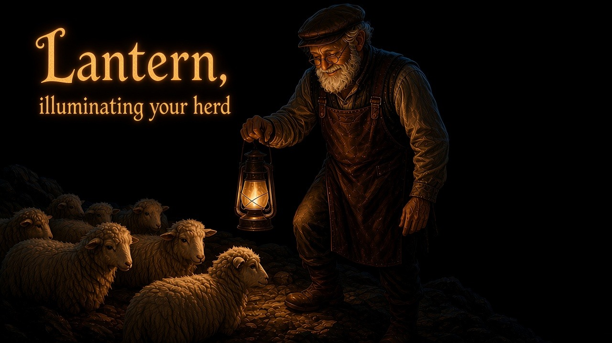

aigora.lantern · v0.9.10 · herdr 0.7.5+
Lantern, illuminating your herd
Herdr manages the herd. The herd is in the field. Lantern lights who needs you, what they are working toward, and how to get there. You talk. It runs herdr.
What it is
A Herdr plugin from the team that brought you Elves. It opens as a chat tab in its own Herdr workspace and starts the CLI you already use — Cursor agent, Devin, Claude Code, Codex, or Grok. That CLI drives Herdr. It is not a new chat product, and it does not cobble or land PRs.
The sidebar already marks working, blocked, done, or idle. Lantern adds goals and progress in words, then seats or focuses a pane when you ask.
Install
- Need Herdr 0.7.5+ and Python 3 on macOS, Linux, or Windows, already running. Windows also needs Git for Windows. Lantern accepts
python3,python, orpy -3. -
Install from GitHub:
herdr plugin install aigorahub/herdr-lantern
-
If you had a local
herdr plugin linkfor this id, unlink first:herdr plugin unlink aigora.lantern
Developers: herdr plugin link /path/to/herdr-lantern. Do not link and GitHub-install the same id at once.
Open it
-
Once it is installed, in Herdr: ctrl+b, then capital H. Lowercase h still moves focus left. If the binding is missing, map
prefix+Htoaigora.lantern.openand runherdr server reload-config. -
Or put this repo’s
hshon yourPATHand run:hsh
Close by quitting the helper CLI. Escape stays inside the CLI. Cursor agent: ctrl+c (twice if a turn is running), or ctrl+d on an empty prompt.
Quit the chat before you upgrade or reinstall the plugin. herdr plugin install drops Herdr’s record of a running lantern pane, so the next open seats a fresh chat beside the old tab. Close that one with herdr pane close <pane_id>.
The lantern checks for a newer published version at light-up and offers the update — it asks first, never upgrades silently. There is no herdr plugin update; a GitHub install refreshes by running the install command again. A linked checkout is only told it is behind; pull it yourself.
Where it sits
-
The first open creates a workspace labelled
🔥 lanternat your home directory and seats the chat there as a tab namedhome— suffixed with what the chat runs, e.g.home · claude · opus, and the chat's first line names the same. Nothing is dropped into the workspace you are working in, and the empty shell tab of the new workspace is closed, so the chat sits alone. The lantern in the sidebar is how you spot it. -
Every later open reuses it. A chat that is still running is focused wherever it sits, so moving or renaming that tab is safe. If it has exited, a new chat is seated in the same workspace. Lantern does not open a second lantern workspace.
-
The new workspace lands last in the sidebar. There is no pin-to-top; drag it where you want it.
The chat runs in the plugin state workdir. Home is only where the workspace sits and the search root the helper is told about (HELPER_CWD). Your repositories keep their own workspaces. When the helper CLI exits, the tab closes, and the lantern workspace closes with it if that chat was the only tab. Herdr reuses workspace and pane ids after a restart, so Lantern checks the remembered ids before it trusts them: keep the 🔥 lantern label if you want that workspace reused after the chat closes.
What it looks like
Simulated. Your helper CLI is the real UI. Lantern primes it with the field, then you talk.
THE HERD IN THE FIELD NEEDS YOU w1J:p2 love-spark done merge #41 w3:p1 site-copy blocked your go-ahead IN MOTION w2:p1 image-maker working /goal 2h QUIET w4:p1 docs idle
▸ who needs me? 2 waiting on you. love-spark wants a merge on #41. site-copy is blocked on your go-ahead. ▸ jump me to love-spark Reuse workspace love-spark. Opening w1J:p2. Asked for, one target: it runs with HERDR_HELPER_OK=1 and says what it opened.
▸ how’s the night shift? IN PROGRESS herdr-lantern executing batch 4/7 moved 11m ago love-spark reviewing PR #41 WAITING ON YOU 1 STALE 0 No Elves install required. If there are no .elves-session.json files, one pairing line is enough.
What to say
- “Who is working, blocked, or done?”Inspect-only. It reads
herdr agent list. - “What are they working toward?”Titles, Claude
/goal/ recap lines, who is waiting on a merge. Status alone is not progress. - “Jump me to the love-spark agent.”Reuse the workspace. Unnamed agents use a pane id, e.g.
w1X:p1. - “Open the image maker repo with claude.”Reuse if they are already there. Slugs:
image-maker, not “Image Maker”. - “There is a PR on battle-paddle. Get a Codex review.”Resolve the repository and PR first. Check the model before any workspace or tab change. Lantern does not edit the repository.
- “Open battle paddle with Grok.”Bare Grok means Cursor with a live Cursor Grok model. Say Grok Build to use the Grok CLI.
- “Create a GitHub repo for X.”Always
gh repo create --private. Public only when you ask for public. - “Make a worktree on herdr for branch helper-tests.”
herdr worktree create, not a second workspace on the main checkout. - “How’s the night shift?”If Elves session files are around, it reads that floor. It does not cobble or land.
Pick your helper CLI
The lantern chat is one CLI. That is yours. It is not a shared team model. HELPER_SPAWN_KIND is separate: the default --kind when Lantern starts an agent for your work (usually claude).
Claude, Grok, and Cursor seats start in the smart-auto permission tier. Codex seats pass --dangerously-bypass-approvals-and-sandbox so they do not stop for command or sandbox confirms. The herdr wrapper puts that flag immediately after --, including when the seat omitted it or placed it after resume or review. bypassPermissions, --yolo, --force, and --always-approve stay off unless a user asks for yolo and confirms the exact flag and lost protections. Before seating, Lantern checks the live model catalog and availability. After a seat, it renames the tab to <slug> · <kind> and reports the kind, model, effort, Fast state, and task.
| Helper | Install | Your helper.conf |
|---|---|---|
| Cursor | Cursor CLI as agent |
HELPER_AGENT="agent" · HELPER_MODEL="cursor-grok-4.6-high-fast" · smart uses --auto-review |
| Devin | Devin CLI (often ~/.local/bin/devin) |
HELPER_AGENT="devin" · leave model empty · HELPER_PERMISSION="smart" |
| Claude | Claude Code as claude |
HELPER_AGENT="claude" · optional model and effort |
| Codex | Codex CLI as codex |
HELPER_AGENT="codex" · optional model and effort |
| Grok | Grok CLI as grok |
HELPER_AGENT="grok" · optional model and effort |
$EDITOR "$(herdr plugin config-dir aigora.lantern)/helper.conf"
HELPER_AGENT="agent" HELPER_MODEL="cursor-grok-4.6-high-fast" HELPER_EFFORT="" HELPER_CWD="~" HELPER_SPAWN_KIND="claude" HELPER_PERMISSION="smart" HELPER_EXTRA_ARGS=""
Empty HELPER_AGENT picks the first of those CLIs on PATH. Conf is KEY=value only; it is never sourced. After an upgrade, copy repo prompt.md over the seeded file if you want the latest rules.
Trust
Runs as you, with your environment. Read launch.sh, lib.sh, and bin/herdr first. Create / start / focus / close run through the helper with HERDR_HELPER_OK=1. The lantern acts on what you ask and stops to ask only when the ask itself is unclear: no target named, or a name that matches more than one.